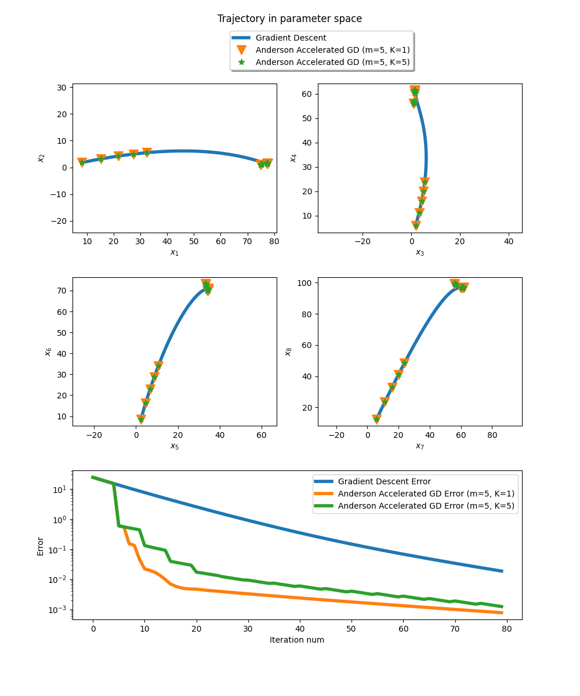

Note
Click here to download the full example code
Anderson acceleration of gradient descent.
For a strictly convex function f, \(\nabla f(x)=0\) implies that \(x\) is the global optimum \(f\).
Consequently the fixed point of \(T(x)=x-\eta\nabla f(x)\) is the optimum of \(f\).
Note that repeated application of the operator \(T\) coincides exactlty with gradient descent with constant step size \(\eta\).
Hence, as any other fixed point iteration, gradient descent can benefit from Anderson acceleration. Here, we choose \(f\) as the objective function of ridge regression on some dummy dataset. Anderson acceleration reaches the optimal parameters within few iterations, whereas gradient descent is slower.
Here m denotes the history size, and K the frequency of Anderson updates.
Error=0.000773 at parameters [77.47434682 1.4267236 34.21515479 61.47511077 82.19083885 70.05207228
88.31264443 96.66062436 3.71396815 99.41857754]
At this point the gradient [-0.00031523 0.00086909 0.00359021 -0.00070666 0.00059213 -0.00095857
0.00401723 0.00237965 0.00112486 -0.00347444] is close to zero vector so we found the minimum.
import jax
import jax.numpy as jnp
from jaxopt import AndersonAcceleration
from jaxopt import FixedPointIteration
from jaxopt import objective
from jaxopt.tree_util import tree_scalar_mul, tree_sub
import matplotlib.pyplot as plt
from sklearn import datasets
jax.config.update("jax_platform_name", "cpu")
# retrieve intermediate iterates.
def run_all(solver, w_init, *args, **kwargs):
state = solver.init_state(w_init, *args, **kwargs)
sol = w_init
sols, errors = [], []
@jax.jit
def jitted_update(sol, state):
return solver.update(sol, state, *args, **kwargs)
for _ in range(solver.maxiter):
sol, state = jitted_update(sol, state)
sols.append(sol)
errors.append(state.error)
return jnp.stack(sols, axis=0), errors
# dummy dataset
X, y = datasets.make_regression(n_samples=100, n_features=10, random_state=0)
ridge_regression_grad = jax.grad(objective.ridge_regression)
# gradient step: x - grad_x f(x) with f the cost of learning task
# the fixed point of this mapping verifies grad_x f(x) = 0
# i.e the fixed point is an optimum
def T(params, eta, l2reg, data):
g = ridge_regression_grad(params, l2reg, data)
step = tree_scalar_mul(eta, g)
return tree_sub(params, step)
w_init = jnp.zeros(X.shape[1]) # null vector
eta = 1e-1 # small step size
l2reg = 0. # no regularization
tol = 1e-5
maxiter = 80
aa = AndersonAcceleration(T, history_size=5, mixing_frequency=1, maxiter=maxiter, ridge=5e-5, tol=tol)
aam = AndersonAcceleration(T, history_size=5, mixing_frequency=5, maxiter=maxiter, ridge=5e-5, tol=tol)
fpi = FixedPointIteration(T, maxiter=maxiter, tol=tol)
aa_sols, aa_errors = run_all(aa, w_init, eta, l2reg, (X, y))
aam_sols, aam_errors = run_all(aam, w_init, eta, l2reg, (X, y))
fp_sols, fp_errors = run_all(fpi, w_init, eta, l2reg, (X, y))
sol = aa_sols[-1]
print(f'Error={aa_errors[-1]:.6f} at parameters {sol}')
print(f'At this point the gradient {ridge_regression_grad(sol, l2reg, (X,y))} is close to zero vector so we found the minimum.')
fig = plt.figure(figsize=(10, 12))
fig.suptitle('Trajectory in parameter space')
spec = fig.add_gridspec(ncols=2, nrows=3, hspace=0.3)
# Plot trajectory in parameter space (8 dimensions)
for i in range(4):
ax = fig.add_subplot(spec[i//2, i%2])
ax.plot(fp_sols[:,i], fp_sols[:,2*i+1], '-', linewidth=4., label="Gradient Descent")
ax.plot(aa_sols[:,i], aa_sols[:,2*i+1], 'v', markersize=12, label="Anderson Accelerated GD (m=5, K=1)")
ax.plot(aam_sols[:,i], aam_sols[:,2*i+1], '*', markersize=8, label="Anderson Accelerated GD (m=5, K=5)")
ax.set_xlabel(f'$x_{{{2*i+1}}}$')
ax.set_ylabel(f'$x_{{{2*i+2}}}$')
if i == 0:
ax.legend(loc='upper left', bbox_to_anchor=(0.75, 1.38),
ncol=1, fancybox=True, shadow=True)
ax.axis('equal')
# Plot error as function of iteration num
ax = fig.add_subplot(spec[2, :])
iters = jnp.arange(len(aa_errors))
ax.plot(iters, fp_errors, linewidth=4., label='Gradient Descent Error')
ax.plot(iters, aa_errors, linewidth=4., label='Anderson Accelerated GD Error (m=5, K=1)')
ax.plot(iters, aam_errors, linewidth=4., label='Anderson Accelerated GD Error (m=5, K=5)')
ax.set_xlabel('Iteration num')
ax.set_ylabel('Error')
ax.set_yscale('log')
ax.legend()
plt.show()
Total running time of the script: ( 0 minutes 3.855 seconds)